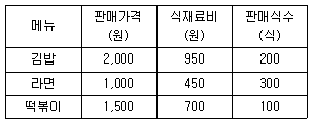
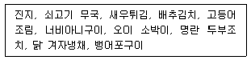

조리기능장 (2005-04-03 기출문제)
1과목: 임의 구분
1. 음용수의 불쾌한 맛과 냄새를 제거하는데 주로 사용하는 것은?
- 활성탄
- 불소
- 염소
- 요오드
(정답률: 48%)

2. 수인성전염병에 속하는 것은?
- 장티푸스
- 홍역
- 결핵
- 파상풍
(정답률: 84%)
3. 병원소는 주로 돼지이며 2군전염병에 해당하는 질병을 매개하는 모기는?
- 토고숲모기
- 작은빨간집모기
- 얼룩날개모기
- 중국얼룩날개모기
(정답률: 75%)
4. 균체의 단백질을 응고시키고 오물소독에 효과적인 것은?
- 석탄산
- 과산화수소
- 산
- 염소
(정답률: 53%)
5. 보건사업수행을 위한 지역사회 접근방법으로서 가장 중요한 것은?
- 보건행정력 강화
- 보건교육 강화
- 보건봉사의 확대 실시
- 보건관계법의 강력 집행
(정답률: 67%)
6. 한냉한 장소에서 생활하거나 작업하므로써 기인되는 질병이 아닌 것은?
- 동상
- 폰티악열병
- 참호족염
- 군집독
(정답률: 69%)
7. 학교급식의 목적과 거리가 먼 것은?
- 올바른 식생활 습관을 기른다.
- 식생활의 예절교육을 배운다.
- 편식의 교정과 결핍증을 예방할 수 있다.
- 전염병의 예방과 교통사고율을 줄일 수 있다.
(정답률: 77%)
8. 타 연구에 비하여 시간과 비용이 적게 들고 특히 희귀 질병의 조사에 적합한 것은?
- 임상 연구
- 코호트 연구
- 단면조사 연구
- 환자 - 대조군 연구
(정답률: 65%)
9. 고도가 높을수록 기온이 상승하는 기온역전의 종류에 속하 않는 것은?
- 침강성 역전
- 원추형 역전
- 전선성 역전
- 해풍형 역전
(정답률: 36%)
10. 기생충에 관한 설명 중 연결이 잘못된 것은?
- 간흡충(간디스토마) - 민물고기 생식
- 폐흡충(폐디스토마) - 게, 가재 생식
- 무구조충 - 쇠고기 생식
- 광절열두조충 - 채소 생식
(정답률: 65%)
11. 전염병관리상 접촉자의 색출이 가장 중요한 것은?
- 콜레라
- 결핵
- 홍역
- 성병
(정답률: 48%)
12. 국가사회나 지역사회의 보건수준을 나타내는 가장 대표적인 지표는?
- 영아사망율
- 모성사망율
- 발병율
- 유병율
(정답률: 75%)
13. HACCP 지정 집단급식소에서 갖추어야 할 시설이 잘못된 것은?
- 손세척 물품 - 역성비누, 손톱솔
- 손건조 물품 - 면수건
- 세척시설 - 냉·온수기
- 소독설비 - 손 소독기
(정답률: 67%)
14. 물엿 등의 표백제로 사용했으나 현재 금지된 유해성 표백제는?
- 에틸렌 글리콜(ethylene glycol)
- 롱갈릿(rongalite)
- 둘신(dulcin)
- 아우라민(auramine)
(정답률: 50%)
15. 장염 비브리오균의 식중독에 관한 설명으로 옳은 것은?
- 원인식품은 식육 및 그 가공품인 경우가 가장 많다.
- 바닷물에 약하므로 예방을 위해 3% 소금물에 잘 씻는다
- 균은 63-65℃에서 20분간 가열로 사멸한다.
- 겨울철에 주로 발생한다.
(정답률: 43%)
16. 식품위생 행정의 목적이 아닌 것은?
- 불량, 부정식품의 근절
- 식품의 안전성 확보
- 식중독 예방과 발생시의 조치
- 평균수명의 연장 대책수립
(정답률: 70%)
17. 다음 중 화학물질과 식중독 관련 내용이 바르게 연결된 것은?
- 구리 - 신경독
- 수은 - 이타이이타이병
- 비소화합물 - 피부의 색소침착
- 카드뮴 - 미나마타병
(정답률: 50%)
18. 다음 식품에서 발생하는 곰팡이독에 대한 설명으로 옳은 것은?
- 저장 곡류, 두류, 땅콩류 등은 곰팡이가 살기 어려운 농산물에 속한다.
- 마이코톡신은 곰팡이의 2차 대사산물로 생산되어 생물에 대하여 독성을 나타내는 물질을 총칭하는 것으로 곰팡이 독을 지칭한다.
- 아플라톡신은 페니실리움(Penicillium)속의 곰팡이가 생산하는 독소의 대표적인 이름이다.
- 곰팡이 번식의 가장 기본적인 영향 요인은 온도와 습도이며, 아플라톡신 오염은 특히 한랭지에서 생산 수확된 농산물에서 문제가 된다.
(정답률: 28%)
19. 세균성 식중독과 경구전염병의 차이에 대한 설명 중 옳은 것은?
- 경구전염병은 세균성 식중독에 비해 잠복기가 짧다.
- 경구전염병은 세균성 식중독에 비해 면역성이 없다.
- 경구전염병은 세균성 식중독에 비해 2차 감염이 거의 없다.
- 경구전염병은 세균성 식중독에 비해 소량의 균으로 발병한다.
(정답률: 37%)
20. 다음 중 대장균군에 속하지 않는 세균은?
- 바실러스(Bacillus)
- 에스체리치아(Escherichia)
- 클렙실라(Klebsiella)
- 시트로박터(Citrobacter)
(정답률: 37%)
2과목: 임의 구분
21. 식품위생과 관련이 없는 것은?
- 세균성 식중독
- 자연독 식중독
- 화학적 식중독
- 비타민 결핍증
(정답률: 74%)
22. 수분함량이 낮은 전분질 식품을 주로 부패시키는 미생물은?
- 세균
- 곰팡이
- 조류
- 바이러스
(정답률: 42%)
23. 1번 다시국물을 만드는 방법을 설명한 것 중 잘못된 것은?
- 먼저 다시마 표면의 먼지 등을 닦아 낸다.
- 분량의 물과 다시마를 넣고 센불에서 뚜껑을 닫고 끓인다.
- 냄비 바닥에서 거품이 몇 방울씩 떠오르고 다시마가 떠오르면 즉시 다시마를 건져 낸다.
- 완성된 국물은 걸러 낸다.
(정답률: 62%)
24. 육류의 사후강직 현상에 대한 설명이 맞는 것은?
- 근육내 pH가 증가하여 발생한다.
- 근육내의 효소에 의해 자가분해 되어 발생한다.
- 근육의 보수성이 최대로 증가한다.
- 강직 중에 있는 육은 가열조리하여도 연해지지 않고 질기다.
(정답률: 32%)
25. 약과를 튀기기 위해 반죽을 넣어 떠오르는 모습으로 기름 온도를 측정해 보았다. 다음 중 약과 반죽을 넣기에 가장 적당한 상태는?
- 반죽이 남비의 밑바닥에 닿은 뒤 떠올라 왔다.
- 튀김남비의 1/3 정도까지 내려간 뒤 올라왔다.
- 반죽이 가라앉지 않고 표면에서 퍼지듯이 튀겨졌다.
- 반죽이 바닥에 가라앉아 풀어졌다.
(정답률: 58%)
26. 중국요리의 재료 써는 방법을 맞게 설명한 것은?
- 차오(條) - 어슷썰기
- 스(絲) - 깍뚝썰기
- 띵(丁) - 얇게썰기
- 뭐(末) - 다져썰기
(정답률: 53%)
27. 다음 열의 전달 방식에 대한 조리가 바르게 연결된 것은?
- 전도 - 후라이팬에 생선을 굽는 것
- 대류 - 석쇠에 너비아니구이를 하는 것
- 복사 - 냄비에 고기국을 끓이는 것
- 극초단파 - 오븐에 빵을 굽는 것
(정답률: 58%)
28. 어느 식당의 메뉴별 판매가격, 식재료비와 판매식수가 다음과 같을 때 총매출액은 얼마인가?

- 395,000원
- 685,000원
- 850,000원
- 990,000원
(정답률: 57%)
29. 샐러드를 만들 때 주의할 점을 설명한 것으로 틀린 것은?
- 신선한 재료를 선택해야 한다.
- 재료나 용기는 항상 차게 한다.
- 재료를 드레싱에 미리 버무려 간이 들게 두었다 담아야한다.
- 재료의 향미, 질감, 색의 조화를 고려하여 먹음직스럽게 담는다.
(정답률: 65%)
30. 우유의 가공품에 대한 설명으로 옳지 않은 것은?
- 치즈 - 우유 단백질인 카제인을 산이나 효소로 응고시킨 것
- 요구르트 - 탈지유에 유산균을 배양시켜 발효시킨 것
- 마가린 - 우유에서 크림을 분리, 교반하여 유지방을 모은 것
- 플라스틱 크림 - 우유의 지방 성분의 함량이 79 - 84%정도인 크림
(정답률: 62%)
31. 한국음식의 상차림과 예절에 대한 설명으로 옳지 않은 것은?
- 한식은 독상이 원칙으로 상차림을 하며 식사하는 사람 앞까지 상을 운반한다.
- 김치 국물이나 국 국물은 그릇째 들이마시지 않으며 숟가락으로 떠서 마시되 소리를 내지 않는다.
- 숭늉은 대접에 담아 쟁반에 받쳐서 들고 가 상위의 국그릇을 내려놓은 다음 숭늉그릇을 올린다.
- 교자상이나 두레상차림의 밥은 처음부터 국과 같이 올리도록 한다.
(정답률: 47%)
32. 습열조리와 건열조리의 혼합이며 결합조직이 많은 고기에 물을 따로 붓지 않아도 고기 속의 수분으로 충분히 가열하는 일종의 찜과 같은 조리법은?
- 브레이징(braising)
- 브로일링(broiling)
- 브릴링(brilling)
- 소테잉(sauteing)
(정답률: 54%)
33. 떡을 만들 때 쌀가루를 끓는 물로 반죽하는 이유는?
- 색을 좋게 하기 위하여
- 호화가 잘 되게 하기 위하여
- 호정화가 잘 되게 하기 위하여
- 노화가 잘 되게 하기 위하여
(정답률: 65%)
34. 효율적인 조리작업장 설비 계획시 고려할 점이 아닌 것은?
- 조리장비 및 설비의 다양성
- 물품의 출입이 자유로울 것
- 조리작업이 편리하고 안전할 것
- 식당과의 연결이 용이할 것
(정답률: 53%)
35. 보험료는 어디에 해당되는가?
- 재료비
- 경비
- 노무비
- 감가상각비
(정답률: 64%)
36. 표준 레시피의 구성요소가 아닌 것은?
- 식재료의 이름과 재료량
- 조리법
- 총 생산량 및 1인분량
- 관능평가 및 결과
(정답률: 63%)
37. 소금에 대한 설명 중 틀린 것은?
- 호렴은 불순물이 가장 많은 것으로 된장 제조시 사용하면 된장의 맛이 나빠진다.
- 재제염은 식염으로 사용하는 것으로 결정이 고우며 꽃소금을 말한다.
- 호렴은 아이스크림을 만들 때 온도를 0℃ 이하로 낮출때 얼음에 섞어 사용한다.
- 보통 국이나 조림, 찌개 등의 소금 농도는 5% 정도가 적당하다.
(정답률: 48%)
38. 사과 껍질을 벗겨 놓으면 누렇게 변한다. 이 현상에 관한 내용 중 옳은 것은?
- 티로시나아제(tyrosinase)에 의한 비효소적 갈변 현상이다.
- 폴리페놀 옥시다아제(polyphenol oxidase)에 의한 효소적 갈변 현상이다.
- 마이야르(maillard) 반응에 의한 효소적 갈변 반응이다.
- 캐러멜(caramel)화에 의한 비효소적 갈변 반응이다.
(정답률: 53%)
39. 식용할 수 없는 복어의 종류는?
- 범복
- 까치복
- 참복
- 독고등어복
(정답률: 71%)
40. 선입선출법에 대한 설명으로 올바르지 않은 것은?
- 먼저 입고되었던 순서에 따라 출고하는 방법이다.
- 구매과정에서부터 출고되기 전까지의 생산날짜, 구입일이 빠른 식재료를 선발하여 출고하는 방법이다.
- 대부분의 식재료 출고방법은 아니나 사용방법과 업장의 특별행사로 인해 진행될 수 있는 출고방법이다.
- 식재료 부패, 유통기한 초과를 방지할 수 있다.
(정답률: 60%)
3과목: 임의 구분
41. 부드럽고, 액체 분리가 적은 질 좋은 달걀찜을 하기 위한 조건과 거리가 먼 것은?
- 물의 첨가량
- 가열온도
- 가열시간
- 간 맞추기 재료의 종류
(정답률: 59%)
42. 다음의 식단 구성 중 가장 뚜렷한 결점을 지적한 것으로 맞는 것은?

- 육류, 어패류, 채소류의 적절한 배합
- 단백질 식품의 편중
- 반복되는 조리법의 사용
- 색깔의 부조화
(정답률: 43%)
43. 게나 새우 등의 갑각류를 삶을 때 선명하게 붉은 색을 얻고 맛의 용출을 줄이기 위한 방법으로 가장 적당한 것은?
- 2%의 식초를 넣고 삶는다.
- 2%의 소금을 넣고 삶는다.
- 2%의 설탕을 넣고 삶는다.
- 2%의 소다를 넣고 삶는다.
(정답률: 24%)
44. 제품을 제조하기 위하여 소비되는 물품의 원가는?
- 노무비
- 재료비
- 경비
- 전력비
(정답률: 65%)
45. 오븐에서 음식을 굽는 것과 관련된 설명으로 맞는 것은?
- 광택이 있는 용기는 복사열을 쉽게 통과시킨다.
- 금속제 용기는 전자파를 쉽게 통과시킨다.
- 복사열에 고루 노출되어야 음식이 고루 익는다.
- 한 개 이상의 용기를 넣을 때는 용기가 그물 선반의 중앙에 모두 위치하게 하여 대류가 발생되지 않게 한다
(정답률: 67%)
46. 육류를 손질하는데 사용되지 않는 것은?
- 슬라이서(slicer)
- 필러(peeler)
- 쵸퍼(chopper)
- 쏘우(saw)
(정답률: 44%)
47. 콜라겐(collagen)에 대한 설명이 잘못된 것은?
- 육류의 질긴부위는 결합조직이 많은데 우리가 먹는 부분의 결합조직은 콜라겐이다.
- 젤라틴을 더운물에 넣어 끓이면 콜라겐이 된다.
- 콜라겐은 아미노산이 결합된 폴리펩타이드 사슬이 3개가 서로 꼬여서 만들어진 것이다.
- 콜라겐은 물속에서 가열하면 첫단계로 수축한다.
(정답률: 50%)
48. 습열조리의 설명 중 가장 맞는 것은?
- 마른국수를 삶을 경우에는 적은 양의 물에 면을 같이 넣고 끓여야 전분이 빨리 호화되어 바람직하다.
- 육류를 데칠 때에는 지미성분의 용출을 막기 위해 처음부터 물에 담가 끓인다.
- 데칠 때는 식품이 잠길 정도의 물을 붓고 실온에서 가열하는 것이 좋다.
- 녹색야채는 데치는 시간이 길어지면 녹색의 페오피틴색소가 갈색의 클로로필이 되어 색깔이 나빠지므로 바람직하지 않다.
(정답률: 43%)
49. 일반적으로 건미역을 물에 충분히 불렸을 때 무게는 약 몇 배가 되는가?
- 1 - 1.5배
- 2 - 4배
- 7 - 9배
- 12 - 15배
(정답률: 58%)
50. 효율적인 구매관리가 이루어지면 얻을 수 있는 효과가 아닌 것은?
- 조리과정의 단순화
- 필요로 하는 물품의 원활한 공급
- 투자의 최소화
- 공급되는 음식의 품질 유지
(정답률: 59%)
51. 생선구이에 대한 설명 중 부적당한 것은?
- 구이는 생선자체의 맛을 살리는 조리법이다.
- 특히 지방함량이 적은 것일수록 굽는 것이 좋다.
- 생선을 구우면 단백질은 응고하고 수분은 증발한다.
- 비린내 성분은 수분과 함께 생선 외부로 추출된다.
(정답률: 55%)
52. 한천(agar)에 대한 설명으로 잘못된 것은?
- 한천은 우뭇가사리 등의 홍조류에서 추출된 다당류이다
- 한천은 고열량식품으로 많이 이용되고 있다.
- 한천은 여러가지의 응고제, 젤리. 과자 등의 제조, 미생물 배양배지 등에 이용된다.
- 한천은 동결해동법(freezing-thawing technique)을 이용하여 만든다.
(정답률: 56%)
53. 보리를 이용한 가공품 중 관계 없는 것은?
- 맥주
- 위스키
- 엿
- 팝콘
(정답률: 71%)
54. 새우, 게 등의 껍질이 가열될 때 붉은 색으로 변하는 이유는?
- 아스타신(astacin)이 생성되므로
- 껍질 속의 단백질이 산성으로 되므로
- 색소가 효소에 의해 분해되므로
- 육색소 단백질이 붉은 색으로 변하므로
(정답률: 58%)
55. 달걀 흰자의 거품을 안정화시키는 첨가물로 옳은 것은?
- 버터
- 설탕
- 우유
- 식용유
(정답률: 48%)
56. 전분의 노화를 억제하는 방법이 아닌 것은?
- 수분함량 조절
- 설탕 첨가
- 냉동건조
- 항산화제 첨가
(정답률: 40%)
57. 땅콩, 호두, 잣, 아몬드는 식사구성안의 어떤 식품군에 포함되는가?
- 곡류 및 전분류
- 고기, 생선, 계란, 콩류
- 채소 및 과일류
- 유지 및 당류
(정답률: 48%)
58. 비타민에 대한 설명이 올바르게 연결된 것은?
- 비타민 A - 항 불임인자로 간유에 다량 함유되어 있다.
- 엽산 - 항 펠라그라 인자로 간, 육류, 소맥배아에 다량 함유되어 있다.
- 비타민 D - 항 구루병인자로 우유, 간유에 다량 함유되어 있다.
- 비타민 B2 - 항 각기성인자로 효모, 소간, 버섯 등에 다량 함유되어 있다.
(정답률: 37%)
59. 육류의 사후경직 시 일어나는 현상으로 틀린 것은?
- 도축 후 근육내에서 호기적 해당작용이 일어난다.
- 글리코겐이 젖산으로 분해된다.
- 근육의 pH가 낮아진다.
- 근육의 보수성이 낮아지고 단단해진다.
(정답률: 36%)
60. 비타민 B2의 성질이 아닌 것은?
- 열에 비교적 안정하다.
- 빛에 대단히 안정하다.
- 비타민 C에 의하여 광분해가 억제된다.
- 알칼리에 비교적 불안정하다.
(정답률: 53%)